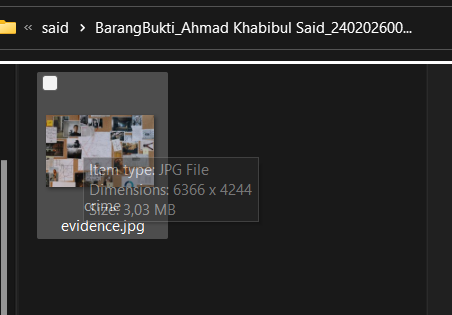
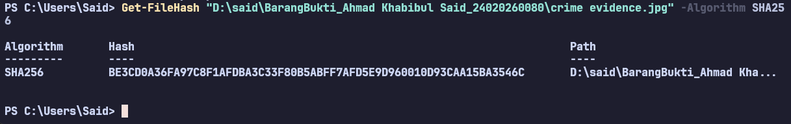
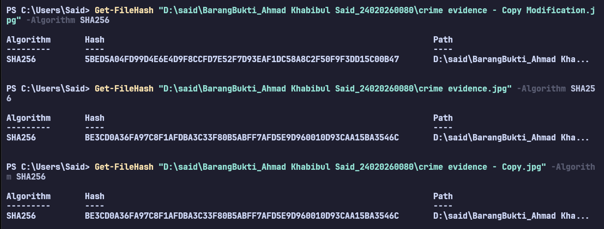
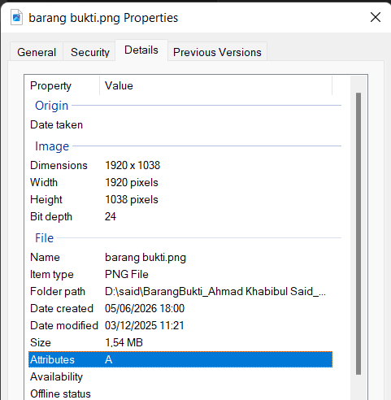
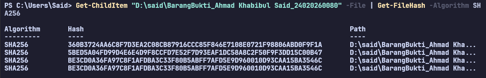

Pada tahapan awal investigasi forensik digital, proses pencatatan identitas fisik dan logis dari barang bukti mutlak dilakukan untuk menjaga akuntabilitas dan keberlangsungan Rantai Penjagaan (Chain of Custody). Berikut adalah rincian data teknis dari barang bukti digital yang telah diamankan dan diperiksa:
crime evidence.jpgD:\said\BarangBukti_Ahmad Khabibul Said_24020260080BE3CD0A36FA97C8F1AFDBA3C33F80B5ABFF7AFD5E9D960010D93CAA15BA3546C

Dalam dunia investigasi forensik digital, barang bukti elektronik (digital evidence) memiliki karakteristik yang sangat berbeda dibandingkan dengan barang bukti fisik konvensional. Barang bukti digital bersifat sangat rapuh (volatile), mudah disalin, diubah, atau bahkan dihancurkan tanpa meninggalkan jejak kerusakan fisik yang kasat mata. Oleh karena itu, penggunaan fungsi cryptographic hash, seperti algoritma SHA-256 tingkat tinggi yang dieksekusi pada tugas ini, menjadi salah satu pilar paling fundamental dalam standar operasional penanganan barang bukti digital (Digital Evidence Handling).
Alasan utama dan paling krusial mengapa nilai hash mutlak diperlukan adalah untuk menjamin dan memverifikasi integritas data (data integrity). Fungsi hash bekerja layaknya "sidik jari digital" (digital fingerprint) yang memetakan keseluruhan susunan arsitektur biner (bit) dari sebuah file menjadi deretan karakter alfanumerik yang unik. Algoritma kriptografi ini memiliki sifat Avalanche Effect (efek longsoran), yang berarti modifikasi sekecil apa pun pada file—meskipun hanya sekadar mengedit satu piksel warna pada gambar JPG, memotong ujung gambar, atau mengubah metadata tanggal di latar belakang—akan menghasilkan nilai hash keluaran yang berubah secara total dan masif. Hal ini memberikan alat bukti berupa kepastian matematis bahwa file barang bukti tersebut masih 100% murni dan identik dengan kondisi aslinya saat pertama kali disita oleh penyidik di Tempat Kejadian Perkara (TKP).
Selain menjamin kemurnian data, verifikasi hash berfungsi sebagai instrumen hukum yang sangat esensial untuk memelihara Rantai Penjagaan (Chain of Custody). Sepanjang siklus panjang investigasi, barang bukti akan terus dipindahkan, disalin, dan diakses oleh berbagai pihak mulai dari kepolisian, analis laboratorium forensik, hingga ditunjukkan ke majelis hakim. Dengan mencatat nilai hash secara resmi pada berita acara penyitaan awal, penegak hukum memiliki tolok ukur yang objektif.
Jika nilai hash gambar saat diuji kembali di meja persidangan sama persis dengan catatan awalnya, maka alat bukti elektronik tersebut dinyatakan sah dan dapat dipertanggungjawabkan keasliannya di mata hukum (sesuai pedoman UU ITE). Sebaliknya, jika nilai hash-nya berbeda satu karakter saja, barang bukti tersebut dinyatakan telah tercemar (tampered) dan otomatis kehilangan seluruh kekuatan pembuktiannya. Tanpa adanya dokumentasi dan verifikasi hash yang kuat, pengacara dari pihak pembela dapat dengan sangat mudah mematahkan argumen Jaksa Penuntut Umum dengan mengklaim bahwa foto bukti telah disusupi, diedit secara digital, atau direkayasa (planted evidence), yang pada akhirnya berisiko besar berujung pada peradilan sesat.
Pada simulasi ini, terdapat skenario di mana seorang penyidik mengklaim bahwa file barang bukti yang diperiksa masih identik dengan file aslinya. Tujuan dari praktikum ini adalah untuk memverifikasi klaim tersebut secara matematis dengan melakukan perbandingan nilai hash antara file asli (Barang Bukti awal), file salinan (copy murni), dan file salinan yang telah dengan sengaja dimodifikasi.
Berdasarkan pengujian menggunakan algoritma SHA-256 via Windows PowerShell, berikut adalah hasil ekstraksi nilai hash dari ketiga iterasi file gambar yang diuji:
| Status File | Nama File | Nilai Hash (SHA-256) |
|---|---|---|
| Asli | crime evidence.jpg |
BE3CD0A36FA97C8F1AFDBA3C33F80B5ABFF7AFD5E9D960010D93CAA15BA3546C |
| Salinan | crime evidence - Copy.jpg |
BE3CD0A36FA97C8F1AFDBA3C33F80B5ABFF7AFD5E9D960010D93CAA15BA3546C |
| Modifikasi | crime evidence - Copy Modification.jpg |
5BED5A04FD99D4E6E4D9F8CCFD7E52F7D93EAF1DC58A8C2F50F9F3DD15C00B47 |

Nilai hash pada file crime evidence - Copy Modification.jpg berubah drastis karena algoritma SHA-256 memproses data pada tingkat arsitektur paling dasar, yaitu susunan biner (bit). Algoritma kriptografi ini dirancang dengan mengadopsi prinsip dasar Avalanche Effect (Efek Longsoran). Ketika file modifikasi diedit di aplikasi pengolah gambar—sekalipun hanya menambahkan satu titik kecil yang nyaris tidak terlihat secara kasat mata—struktur kode dan metadata di dalam file tersebut berubah. Perubahan input yang sangat minim ini memaksa algoritma untuk memproses ulang dan menghasilkan output rangkaian kode alfanumerik yang sama sekali baru dan tidak dapat diprediksi, sehingga melenceng total dari hash file aslinya.
Ya, sangat memengaruhi. Dalam kaidah ilmu forensik digital, integritas data bersifat absolut: sebuah barang bukti berstatus 100% murni asli, atau sudah tercemar. Perubahan 1 karakter data, 1 spasi teks, atau 1 piksel gambar menandkan bahwa file tersebut tidak lagi identik dengan kondisi awal saat proses akuisisi di Tempat Kejadian Perkara (TKP). Secara legal formal, perubahan sekecil apa pun ini langsung memutus dan merusak Rantai Penjagaan (Chain of Custody). File tersebut otomatis menjadi cacat hukum dan batal demi hukum jika diajukan sebagai alat bukti di persidangan. Hal ini berkebalikan dengan file crime evidence - Copy.jpg yang nilai hash-nya tetap identik karena murni digandakan tanpa ada instruksi pengubahan isi.
Risiko yang paling fatal adalah kegagalan mutlak dalam pembuktian di pengadilan (inadmissibility of evidence). Jika seorang penyidik hanya mengandalkan tampilan visual file tanpa melakukan verifikasi hash secara berkala, tidak akan ada jaminan ilmiah yang mampu membuktikan bahwa file tersebut belum dimodifikasi, rusak, atau disisipi malware selama masa penyidikan. Tanpa adanya dokumentasi hash yang solid, penasihat hukum dari pihak pembela dapat dengan mudah mematahkan argumen di persidangan dengan menuduh bahwa barang bukti tersebut telah direkayasa secara sepihak (planted evidence). Kelalaian prosedural ini pada akhirnya bisa menyebabkan terduga pelaku bebas, atau lebih buruk lagi, memicu peradilan sesat.
Dalam tahapan investigasi forensik, setelah sebuah barang bukti diverifikasi keasliannya melalui fungsi hash, penyidik harus melakukan ekstraksi metadata. Skenario praktikum ini melibatkan penemuan sebuah dokumen gambar digital yang diduga terkait dengan tindak kejahatan. Tujuan ekstraksi ini adalah memeriksa "data tentang data" yang tersembunyi di dalam struktur file untuk mengungkap konteks historis, riwayat pembuatan, serta atribusi kepemilikan sistem pada artefak tersebut.
Berdasarkan pemeriksaan forensik menggunakan instrumen analitik bawaan Windows Properties pada tab Details, berikut adalah temuan metadata dari barang bukti dokumen digital yang diperiksa:
barang bukti.png
Metadata, yang secara konseptual didefinisikan sebagai "data tentang data", memegang peranan analitis yang sangat krusial dalam ruang lingkup forensik digital. Menjawab pertanyaan mendasar mengenai apakah metadata dapat digunakan sebagai barang bukti di pengadilan: jawabannya adalah sangat bisa, namun kapasitas hukumnya murni sebagai bukti koroboratif (bukti pendukung), bukan bukti primer yang mutlak dapat berdiri sendiri.
Fungsi esensial dari metadata adalah kemampuannya untuk mengungkap "konteks historis" dan kronologi dari sebuah artefak digital. Pada pemeriksaan file barang bukti.png ini, ditemukan sebuah petunjuk forensik yang sangat krusial, yaitu Anomali Garis Waktu (Timeline Anomaly). Waktu pembuatan file (Date created) tercatat pada 5 Juni 2026, yang secara kronologis lebih baru dibandingkan waktu modifikasi terakhirnya (Date modified) yang tercatat pada 3 Desember 2025. Bagi masyarakat awam, ini tampak tidak masuk akal. Namun bagi investigator forensik, ini adalah bukti matematis bahwa gambar tersebut bukanlah file yang difoto atau diproduksi dari nol pada tanggal 5 Juni 2026. File tersebut merupakan artefak lama dari tahun 2025 yang baru saja disalin (copy-paste), diunduh dari internet, atau dipindahkan dari perangkat lain ke dalam drive komputer ini.
Namun, di balik kegunaan investigatifnya yang sangat kaya, metadata memiliki kerentanan dan keterbatasan forensik yang sangat fatal. Keterbatasan paling mendasar dari metadata adalah sifatnya yang sangat rapuh (fragile/volatile) dan sangat mudah untuk dimanipulasi oleh pihak yang tidak bertanggung jawab. Seorang pelaku tindak kejahatan siber dengan literasi komputer tingkat dasar dapat dengan mudah menghapus seluruh jejak atribusi dengan memanfaatkan fitur "Remove Properties and Personal Information" bawaan sistem operasi Windows. Pelaku juga bisa memanipulasi waktu pembuatan file secara artifisial hanya dengan memundurkan pengaturan jam di sistem komputernya (system clock)—sebuah teknik anti-forensics yang dikenal dengan istilah timestomping.
Oleh karena kelemahan fundamental inilah, standar operasional peradilan dan pedoman pembuktian hukum menetapkan batasan yang sangat ketat. Temuan metadata tidak boleh diinterpretasikan secara tunggal. Untuk memiliki kekuatan pembuktian yang sah di mata hukum, metadata wajib divalidasi silang (trianggulasi) dan dikorelasikan dengan artefak forensik sekunder lainnya. Data tersebut harus selalu disandingkan dengan proses pemeliharaan integritas hash, serta diuji silang dengan log aktivitas sistem (event logs) untuk membuktikan kebenaran atribusi kronologi tersebut secara meyakinkan di hadapan majelis hakim pengadilan.
Penyidik menerima laporan dugaan tindak pidana penipuan transaksi e-commerce. Pelapor menyerahkan barang bukti digital awal yang terdiri dari dokumen invoice (tagihan), tangkapan layar percakapan dengan terduga pelaku, dan catatan log mutasi rekening. Barang bukti tersebut diserahkan kepada pemeriksa forensik untuk diamankan, diakuisisi, dan dilakukan analisis tingkat pertama.
| Tanggal (Waktu) | Petugas Pemeriksa | Aktivitas / Tindakan | Keterangan |
|---|---|---|---|
| 05/06/2026 (13:00) | Ahmad Khabibul Said | Menerima flashdisk berisi 3 file barang bukti dari penyidik. | Kondisi aman dan utuh |
| 05/06/2026 (13:15) | Ahmad Khabibul Said | Melakukan akuisisi data dan menghitung nilai hash SHA-256 awal. | Sesuai SOP Forensik |
| 05/06/2026 (13:30) | Ahmad Khabibul Said | Membuat salinan kerja (working copy) untuk proses analisis lebih lanjut. | Mencegah pencemaran bukti |
| 05/06/2026 (13:45) | Ahmad Khabibul Said | Menyimpan barang bukti asli ke dalam secure storage (brankas penyimpanan). | Terkunci rapat |
| 05/06/2026 (14:00) | Ahmad Khabibul Said | Melakukan pemeriksaan metadata pada salinan kerja barang bukti. | Analisis awal selesai |
Nomor Kasus: 204/DF/VI/2026
Pemeriksa Utama: Ahmad Khabibul Said (NIM: 24020260080)
Tanggal Pemeriksaan: 5 Juni 2026
Telah diterima dan diidentifikasi tiga (3) buah artefak digital yang diduga kuat berkaitan dengan tindak pidana penipuan daring. Detail spesifikasi logis barang bukti adalah sebagai berikut:
Invoice_Tagihan_Fiktif.pdf | Ukuran: 1,20 MB | Hash SHA-256: A8B9C44298FC1C149AFBF4C8996FB92427AE41E4649B934CA495991B7852C766Screenshot_Chat_Pelaku.png | Ukuran: 2,45 MB | Hash SHA-256: 7D969EEF6ECAD3C29A3A629280E686CF0C3F5D5A86AFF3CA12020C923ADC6D81Log_Mutasi_Rekening.txt | Ukuran: 24 KB | Hash SHA-256: 4F86D081884C7D659A2FEAA0C55AD015A3BF4F1B2B0B822CD15D6C15B0F00B12Pemeriksaan dilakukan melalui empat tahapan standar forensik digital. Pertama, tahap Akuisisi, di mana file dipindahkan dari media pelapor ke workstation forensik menggunakan metode write-blocker untuk mencegah modifikasi sistem yang tidak disengaja. Kedua, Dokumentasi, yaitu mencatat seluruh perpindahan barang bukti ke dalam formulir Chain of Custody. Ketiga, Verifikasi Hash, yaitu menggunakan algoritma kriptografi SHA-256 via Windows PowerShell untuk mengunci "sidik jari digital" masing-masing file agar orisinalitasnya dapat dipertanggungjawabkan di pengadilan. Keempat, Pemeriksaan Metadata, yaitu mengekstraksi informasi tersembunyi menggunakan fitur Windows Properties pada salinan kerja (working copy).
Berdasarkan hasil analisis terhadap salinan kerja barang bukti, tim pemeriksa menemukan beberapa temuan forensik yang sangat signifikan. Pada proses verifikasi integritas, nilai hash salinan kerja terbukti identik 100% dengan nilai hash barang bukti asli, yang mengonfirmasi bahwa tidak ada modifikasi, kerusakan, atau pencemaran data selama proses akuisisi berlangsung.
Namun, pada tahap pemeriksaan metadata spesifik pada file Invoice_Tagihan_Fiktif.pdf, ditemukan sebuah anomali waktu yang sangat fatal. Tanggal pembuatan file (Date created pada metadata) tercatat pada 4 Juni 2026, sedangkan timestamp visual transaksi yang tertera di dalam gambar dokumen tersebut tertulis 28 Mei 2026. Selain itu, pada atribut Software/Program name tercatat penggunaan aplikasi "Adobe Photoshop 2024". Anomali ini memberikan indikasi dan bukti matematis yang kuat bahwa dokumen tagihan tersebut telah direkayasa secara digital (dibuat dan diedit jauh setelah tanggal transaksi yang diklaim terjadi). Sementara itu, metadata pada file Screenshot_Chat_Pelaku.png dan Log_Mutasi_Rekening.txt menunjukkan struktur data yang wajar tanpa adanya indikasi manipulasi.
Secara keseluruhan, dapat disimpulkan bahwa integritas ketiga barang bukti digital yang disita masih terjaga dengan sangat baik (murni). Prosedur dokumentasi berlapis (CoC) dan verifikasi hash SHA-256 telah dilakukan sesuai SOP forensik, sehingga barang bukti ini berstatus sah dan memenuhi syarat untuk dihadirkan di persidangan. Meskipun integritas filenya terjaga dengan baik, analisis forensik tingkat pertama pada metadata menyimpulkan secara meyakinkan bahwa konten di dalam file PDF merupakan dokumen hasil rekayasa grafis (dokumen palsu) yang sengaja diproduksi oleh terduga pelaku untuk memuluskan aksi penipuannya.
Sebagai bentuk pengamanan integritas data berskala direktori, berikut adalah dokumentasi hasil eksekusi script otomatisasi perhitungan hash massal. Proses ini menggunakan kombinasi parameter Get-ChildItem yang dihubungkan (piping) dengan perintah Get-FileHash untuk mengekstraksi nilai SHA-256 seluruh artefak dalam satu folder sekaligus.
Perintah yang dieksekusi:
Get-ChildItem "D:\said\BarangBukti_Ahmad Khabibul Said_24020260080" -File | Get-FileHash -Algorithm SHA256
Dalam praktikum forensik digital skala laboratorium, penyidik mungkin hanya berhadapan dengan satu hingga tiga file. Namun, pada realitas penegakan hukum di lapangan—seperti penggerebekan server sindikat perjudian online, penyitaan komputer perusahaan dalam kasus korupsi, atau insiden kejahatan siber kompleks—penyidik sering kali harus mengakuisisi hard drive atau gawai yang kapasitasnya mencapai satuan Terabyte. Media penyimpanan tersebut lazimnya memuat ratusan ribu hingga jutaan file digital.
Jika seorang analis forensik harus mengeksekusi perintah hash secara manual satu per satu pada skenario masif tersebut, hal itu tidak hanya sangat tidak efisien, melainkan mustahil secara operasional. Oleh karena itu, penerapan otomatisasi menggunakan Command Line Interface (CLI) seperti PowerShell memberikan tiga manfaat fundamental dan tak tergantikan:
Otomatisasi memungkinkan sistem komputasi untuk membaca seluruh isi direktori dan mengunci "sidik jari digital" dari ribuan barang bukti hanya dalam hitungan detik. Kecepatan komputasi ini sangat krusial bagi penyidik untuk segera menyelesaikan fase Akuisisi dan beralih ke fase Analisis Data, sehingga mempercepat proses penyidikan secara keseluruhan tanpa menunda penegakan hukum.
Memasukkan perintah secara manual secara berulang-ulang sangat rentan terhadap kesalahan, seperti salah mengetik nama file (typo) atau melewatkan barang bukti penting yang sengaja disembunyikan tersangka di dalam sub-folder yang rumit. Perintah otomatisasi (Get-ChildItem) bertindak sebagai crawler sistematis yang menjamin bahwa algoritma akan menyisir seluruh sudut direktori tanpa ada satu pun artefak yang terlewat dari proses pelabelan hash.
Manfaat paling krusial secara hukum adalah penciptaan daftar induk (Master Hash List) secara instan sesaat setelah perangkat disita di Tempat Kejadian Perkara (TKP). Daftar induk ini akan menjadi benteng forensik yang solid di pengadilan. Dengan adanya data otomatis ini, penyidik dapat membuktikan secara matematis bahwa selama proses investigasi berlangsung, tidak ada satu pun file di dalam drive sitaan tersebut yang diam-diam disisipkan (planted evidence), direkayasa, atau dihapus oleh pihak mana pun.